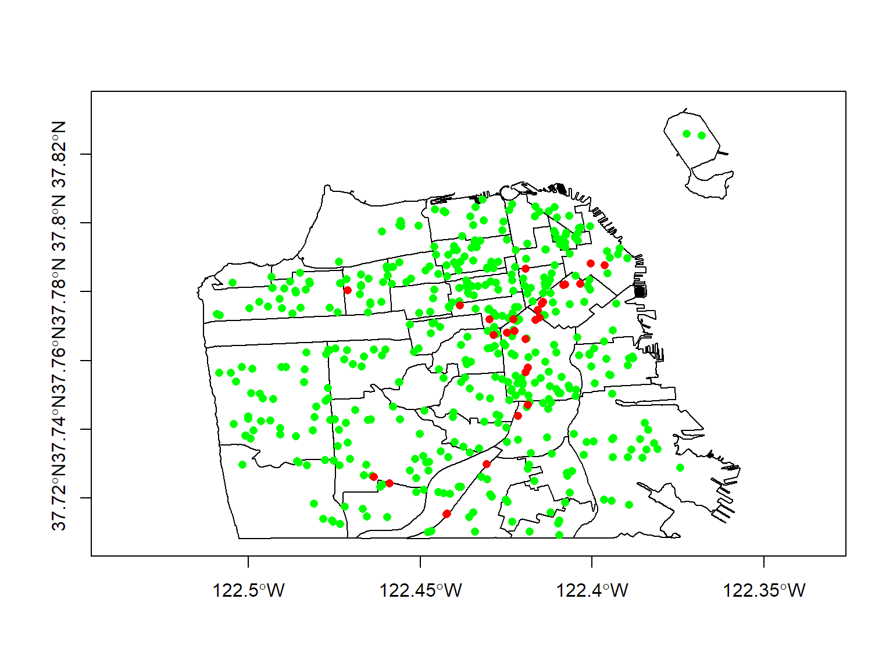

Week 1:
Spatial Data Analysis with R
October 4, 2018
Converting a CSV to SpatialPoints
sp package
Spatial Data Classes from the sp package
Vector data classes
SpatialPoints, SpatialPointsDataFrame
SpatialLines, SpatialLinesDataFrame
SpatialPolygons, SpatialPolygonsDataFrame
Raster classes
SpatialPixels
SpatialGrid
To see all data classes that inherit from ‘Spatial’, run getClass('Spatial')
Spatial* Data Classes
- all sp* objects store projection info
- it’s relatively easy to convert data types within and between packages
- standard data frame syntax will often work with sp* objects
- many spatial analysis packages take sp* objects directly or have conversion functions
SpatialPoints
CSV to SpatialPoints*
Point data is commonly saved in CSV files. Let’s look how we would import that into R, convert it to a SpatialPoints object, and then plot it. We’ll use a CSV file that for the schools in San Francisco.
First, we import the CSV file.
sf_schls_df <- read.csv("../docs/data/sf_schools.csv", stringsAsFactors = FALSE)
names(sf_schls_df)
## [1] "Campus.Name" "CCSF.Entity" "Lower.Grade"
## [4] "Upper.Grade" "Grade.Range" "Category"
## [7] "Map.Label" "Lower.Age" "Upper.Age"
## [10] "General.Type" "CDS.Code" "Campus.Address"
## [13] "Supervisor.District" "County.FIPS" "County.Name"
## [16] "Lat" "Long"
We need to find which columns contain the latitude and longitude. We can guess by the name.
sf_schls_df[1:10, c("Campus.Name", "Category", "Lat", "Long")]
## Campus.Name
## 1 Alamo Elementary School
## 2 Alvarado Elementary School
## 3 Aptos Middle School
## 4 Argonne Early Education School
## 5 Argonne Elementary School
## 6 Asawa, Ruth Asawa San Francisco School Of The Arts - Academy Of Arts And Sciences
## 7 Balboa High School
## 8 Brown, Willie Brown Jr Middle School
## 9 Bryant Early Education / Bryant Elementary
## 10 Buena Vista / Horace Mann
## Category Lat Long
## 1 USD Grades K-5 37.78300 -122.4823
## 2 USD Grades K-5 37.75368 -122.4382
## 3 USD Grades 6-8 37.72967 -122.4658
## 4 USD PreK/TK 37.77397 -122.4741
## 5 USD Grades K-5 37.77531 -122.4763
## 6 USD Grades 9-12 37.74532 -122.4488
## 7 USD Grades 9-12 37.72114 -122.4414
## 8 USD Grades 6-8 37.73648 -122.3996
## 9 USD PreK-5, Grades K-5 37.75145 -122.4047
## 10 USD Grades K-8 37.75303 -122.4202
We’ll discuss the details more next time, but we can convert this data frame to a SpatialPoints object using a function from the sp package:
sf_schls_sp <- sp::SpatialPoints(sf_schls_df[ , c("Long", "Lat")])
summary(sf_schls_sp)
## Object of class SpatialPoints
## Coordinates:
## min max
## Long -122.50925 -122.36800
## Lat 37.70912 37.82599
## Is projected: NA
## proj4string : [NA]
## Number of points: 445
Looks like we created it, but we have to record which CRS the locations are in.
proj4string(sf_schls_sp) <- CRS("+proj=longlat +datum=WGS84")
Now we can plot them together.
plot(sf_nb, axes=T, asp=1)
plot(sf_schls_sp, add=T, col="green", pch=16)
plot(sf_pot, add=T, col="red", pch=16)
